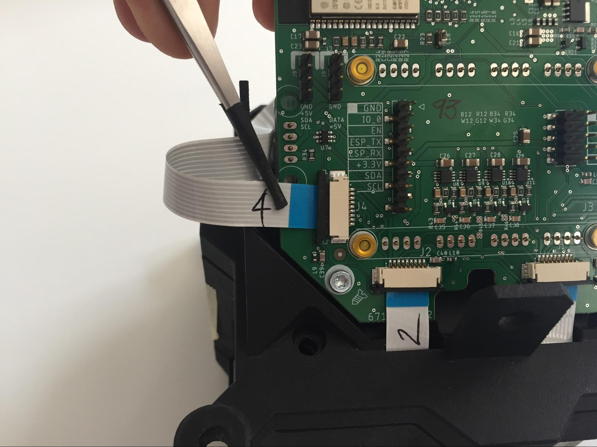
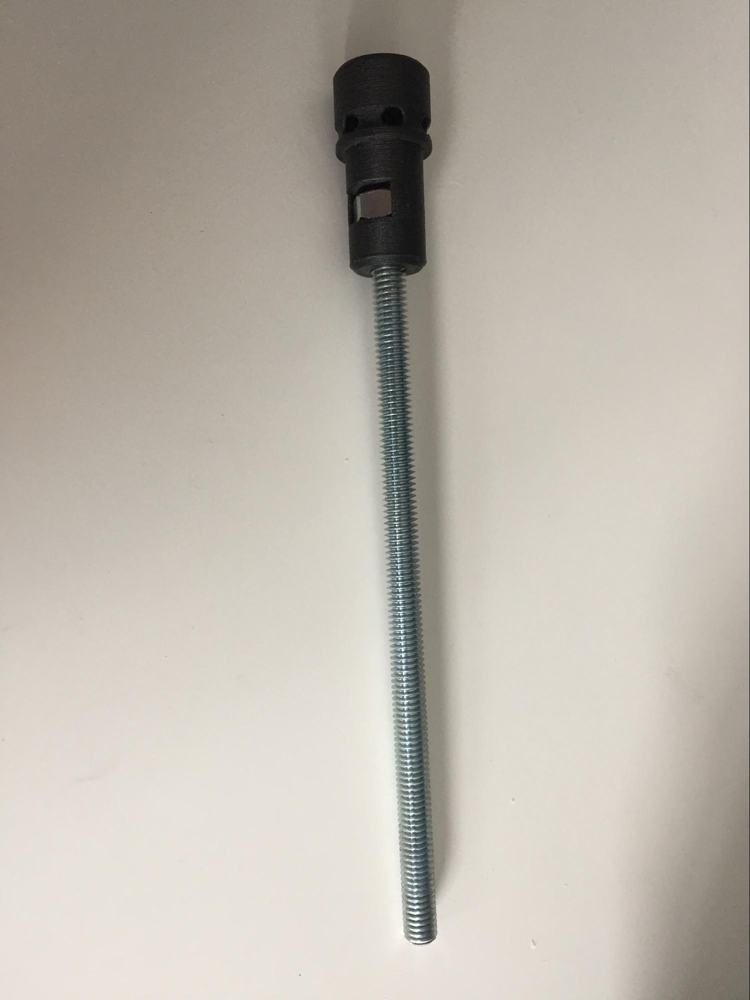

Apollo 1 Module (P2) manufacturing operation
Before You start:
Detailed description how to prepare for the work operations for specific manufacturing step
- What tools do you need[a]
- Screwdriver bit Hex3
- Screwdriver bit Torx 10 75 mm long
- Wrench 8/10
- Wrench 14
- Tweezers soft
- Anti Static Wrist Strap
- How to prepare materials
- Safety
- Safety glasses

Every item:
- Step by step guide
- Set a turntable with cushioning on the table. Place [ATCH000000016] Apollo P2 LED board with cooler on it. LED board text should be oriented (readable) in the bottom left corner.
- Write connector numbers onto flat flex cables:
1x short cable number “1”
3x long cable numbers “2, 3, 4”
- Connect the short cable (~150mm) to a connector labeled “J1”. Pull the black holding clamp away from the connector and towards you. Insert the cable contacts facing downward (blue side upwards). Push the cable into the connector. Push the holding clamp back into the connector.
- Connect long cables for J2 J3 and J4 (~300mm) in a similar fashion.
- Set [MPLA000000093] Apollo Enclosure Lens Cover (P2) on top of the LED board and cooler. Turn the whole sub-assembly backwards. Text on the LED board must remain towards you (now in bottom right corner).
- Place [MPLA000000084] Apollo Enclosure Cooler Cover on the cooler and put cables through each guide in the casing respectively.
- Set fan on the table, stretch the cable straight and set it so it exits from the bottom right corner.
- Fan blades must be on the bottom side. Guiding arrow points up when seated flat on the table.
- Set fan into the assembly. Spin excess cable around the fan, supported by fan housing corners. Fan’s cable must point in the direction shown.
- Insert short cable “J1” through [MPLA000000097] Apollo Enclosure Antenna Holder right hand side slot.
- Fold cable “J2” between the fan and the casing and insert it through Antenna Holder left hand side slot. Rearrange fan cable to exit behind Antenna Holder part.
- Fold cable “J3” between the fan and casing (fan cable can be moved if a better fit can be achieved). See figure below for detailed cable orientations J1 to J4
- Repeat with cable “J4”.
- Take [6710819402] Apollo 1 Controller Board P2, connect cables J1 and J2 into numerically correct connectors on the board.
- Put the controller PCB into the assembly and fasten two M3 bolts. Tighten these carefully by hand as plastic threads are easily damaged.
- Connect cables “J3” and “J4” to their corresponding connectors. Use tweezers with non-rigid end caps.
 - Place Antenna Holder onto the assembly. Make sure that cables won’t get caught between case and fan edges.
- Insert fan cable into a 4-pin keyed connector .
- Screw Antenna Holder gently with 2x M4 bolts to the heatsink. Make sure no cable interferes with the fan's blades.
- Connect Antenna cable connector to the controller, stick the other end through the hole in Antenna Holder.
- Put a washer and a nut onto the protruding antenna connector. Tighten the nut with a 8mm wrench whilst holding the cable side steady with another 8mm wrench. Don’t over tighten the plastic case. Attach the antenna.
- Add [MPLA000000095] Apollo Enclosure Cooler Grill P2 to the assembly and secure it gently with 2x M4 bolts.
- Place a washer onto the Switchcraft receptacle and align the sticker by the washer position, then stick it down. (Sticker hole is cut exactly by washer’s measurements)
- Tighten Switchcraft receptacle with a washer and a nut.
- Put a drop of threadlocker glue onto a threaded rod and screw on a nut with a plastic cap. Make 4x of these.
- Slightly lift the top of the lamp and put 4x pieces of pipe. Plastic case parts have a step on the edge to fix the piece of pipe in place.
- Assemble a nut, plastic cap and a short piece of pipe.
- Put the threaded rod sub-assembly through the lamp's casing holes and tighten the previous nut-cap assembly with fingers without thread locking glue. (glue will be added after passing burn-in test) Tighten all four corners of the lamp.
-
- Lens glass?